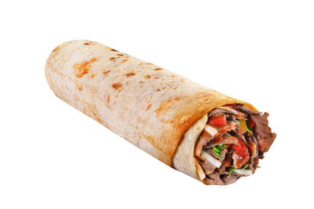

Los durum son tipicos de la cocina turca.
como hacer un durum en tu casa TUTORIAL.
El primer paso es comprar los ingredientes:toritas,salsa picante,carne de pollo,tomate,lechuga...
El segundo paso es ver un tutorial de como realizar un durum casero: Haz click aquí para ver un tutorial de como hacer un durum.
El tercer paso es ¡¡¡DISFRUTAR DEL DURUM!!!